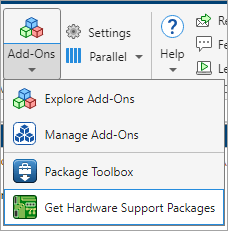

Install Support for Raspberry Pi Hardware
Add support for Raspberry Pi® hardware to the MATLAB® product by installing the MATLAB Support Package for Raspberry Pi Hardware.
This process installs the following items on your host computer:
Third-party software development tools
MATLAB commands
Examples
When you complete this installation, you can use MATLAB commands to control and retrieve data from Raspberry Pi hardware and peripherals.
The Raspberry Pi hardware is also referred to as a board or as target hardware.
Raspberry Pi Operating System
You can set up your Raspberry Pi hardware using any of these Raspberry Pi operating systems:
32-bit Buster OS
32-bit and 64-bit Bullseye OS
32-bit and 64-bit Bookworm OS
Install, Update, or Uninstall Support Package
Install Support Package
On the MATLAB Home tab, in the Environment section, select Add-Ons > Get Hardware Support Packages.

In the Add-On Explorer window, click the support package and then click Install.
Update Support Package
On the MATLAB Home tab, in the Resources section, select Help > Check for Updates.
Uninstall Support Package
To uninstall the support package, in the Add-Ons
panel, click the Options button  next to the installed support package, and then click
Uninstall.
next to the installed support package, and then click
Uninstall.
To open the Add-Ons panel, click the Add-Ons icon
 on the left sidebar.
on the left sidebar.
Prerequisites
Before starting the hardware setup process, install an operating system on to the SD card of your Raspberry Pi. You can do so by using the Raspberry Pi Imager utility or by manually installing an operating system image. For more information, refer to the Raspberry Pi documentation (Setting up your Raspberry Pi).
Hardware Setup
Hardware boards and devices supported by MathWorks® require additional configuration and setup steps to connect to MATLAB and Simulink®. Each support package provides a hardware setup process that guides you through registering, configuring, and connecting to your hardware board.
If the support package is already installed,
you can start the hardware setup by opening the Add-Ons panel. To open
the Add-Ons panel, click the Add-Ons icon  on the left sidebar.
on the left sidebar.
In the Add-Ons panel, click the
Options
 button next to the installed support package, and click
Setup to start the hardware setup process.
button next to the installed support package, and click
Setup to start the hardware setup process.
After starting, the Hardware Setup window provides instructions for configuring the support package to work with your hardware.
Follow the instructions on each page of the Hardware Setup window. When the hardware setup process completes, you can open the examples to get familiar with the product and its features.